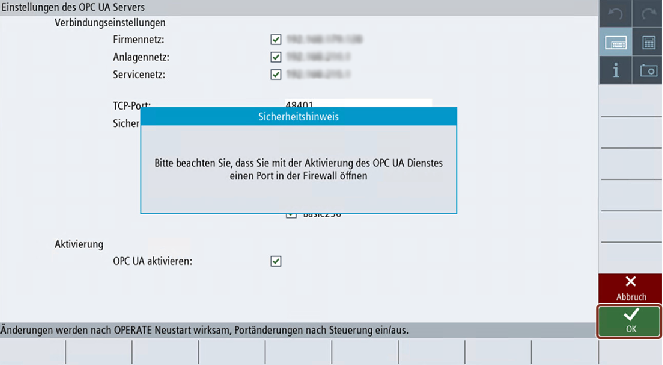
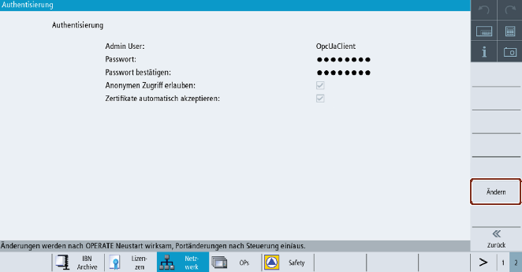

HMI-Uhrzeit prüfen
Stellen Sie sicher, dass die HMI-Uhrzeit richtig eingestellt ist, da dies eine Voraussetzung für die verschlüsselte Kommunikation ist.
| Hinweis |
|
Das für die sichere OPC-UA-Kommunikation benötigte Zertifikat wird beim ersten Hochlauf automatisch erzeugt. Der Gültigkeitsbeginn des Zertifikats wird dabei auf das aktuelle Datum gesetzt. Der Gültigkeitszeitraum beträgt 20 Jahre. Wenn die Systemzeit der SINUMERIK nachträglich geändert wird, sodass sie außerhalb des Gültigkeitszeitraums liegt, funktioniert die sichere OPC-UA-Kommunikation nicht (BadCertificateTimeInvalid). Das Zertifikat kann auch manuell geändert werden (siehe Beschreibung in Kapitel Dialogfeld Zertifikate). |
OPC-UA-Konfigurationsdialog ausführen
-
Starten Sie den OPC-UA-Konfigurationsdialog über den Bedienbereich "Inbetriebnahme > Netzwerk".
-
Drücken Sie den Softkey "OPC UA".
-
Drücken Sie den Softkey "Einstellung". Das Dialogfeld "Einstellungen des OPC UA Servers" wird angezeigt. Drücken Sie den Softkey "Ändern". Nehmen Sie die erforderlichen Einstellungen für die Verbindung und Aktivierung vor.

Einstellungen des OPC UA Servers (mit Änderungen)
Gruppe
Einstellung
Beschreibung
Verbindungseinstellungen
Firmennetz
Systemnetz (Anlagennetz)
Servicenetz
Es werden die verfügbaren Netzwerkverbindungen (IP-Adresse) auf einem spezifischen Zielsystem (SINUMERIK ONE und IPC) angezeigt. Welche Netzwerkoptionen zur Verfügung stehen, hängt von Ihrem Zielsystem ab.
Firmennetz
Systemnetz (Anlagennetz)
Servicenetz
So werden beispielsweise am IPC nur zwei Netze (Firmen- und Systemnetz [Anlagennetz]) angezeigt.
OPC UA Clients, die auf demselben IPC wie der OPC UA Server ausgeführt werden, können den Server über die IP-Adressen des Firmen- oder Systemnetzes erreichen. Der OPC UA Server ist nur über die Adresse des lokalen Hosts erreichbar (127.0.0.1), wenn diese in der Liste der Netzadressen aufgeführt ist.
Es ist möglich, eine Schnittstelle vom OPC UA Server aus zu aktivieren oder zu deaktivieren.
Zusätzliche Netzadresse Nr. 1
Zusätzliche Netzadresse Nr. 2
Alle Windows-Geräte erlauben zwei zusätzliche IP-Adressen, sodass die dritte Schnittstelle des IPC verwendet werden kann.
Wenn die zusätzliche IP-Adresse nicht gültig ist, kann der OPC UA Server nicht erreicht werden.
Es ist möglich, eine Schnittstelle vom OPC UA Server aus zu aktivieren oder zu deaktivieren.
TCP-Port
TCP-Port, an dem der OPC UA Server verfügbar sein soll.
Standardkonfiguration: 4840
Hinweis
Der Port muss auch in der Firewall geöffnet sein. Für die NCU geschieht das automatisch. Bei einem IPC muss der Port in der Firewall manuell geöffnet werden.
Sicherheitsrichtlinie
Sie können aus den folgenden Einstellungen auswählen, welche Sicherheitsrichtlinie vom Server angeboten werden soll:
Einstellung
Standardkonfiguration
128 Bit (Aes128)
Deaktiviert.
256 Bit (Aes256, Basic256Sha256)
Aktiviert.
Keine
Deaktiviert.
Veraltete Richtlinien zulassen
Deaktiviert.
Setzen Sie das Häkchen, um die veralteten Sicherheitsrichtlinien zu aktivieren, oder entfernen Sie das Häkchen, um sie zu deaktivieren.
Veraltete Sicherheitsrichtlinien:
Basic128 (RSA15)
Basic256
Hinweis
Als Standardeinstellung ist die stärkste Sicherheitsrichtlinie (256 Bit) ausgewählt.
Bei einem Aktualisierungsszenario bleiben die bereits ausgewählten alten Richtlinien (Basic128 (RSA15), Basic256 und Basic256Sha256) zusammen mit "Veraltete Richtlinien zulassen" ausgewählt. Sie können die Sicherheitsrichtlinien gemäß Anforderungen ändern.
Aktivierung
OPC UA aktivieren
Setzen Sie das Häkchen, um OPC UA zu aktivieren, oder entfernen Sie das Häkchen, um es zu deaktivieren.
Achtung Sicherheitsrisiko durch Datenmanipulation und Mitlesen von Daten
Anonymer Zugriff kann ein Sicherheitsrisiko darstellen. Der anonyme Zugriff sollte daher strikt auf die Inbetriebnahme beschränkt werden.
Für den Normalbetrieb wird eine Authentifizierung mittels Benutzername und Passwort oder anhand von Zertifikaten empfohlen (siehe Kapitel Dialogfeld Zertifikate).
Achtung Sicherheitsrisiko durch Datenmanipulation und Mitlesen von Daten
Wenn keine Nachrichtenverschlüsselung zum Client eingerichtet ist, besteht ein Risiko für Datenmanipulation und Mitlesen von Daten. Es wird daher dringend empfohlen, eine Nachrichtenverschlüsselung zum Client einzurichten.
Verwenden Sie den höchstmöglichen Verschlüsselungsstandard (256 Bit), um eine sichere Nachrichtenübertragung sicherzustellen.
Hinweis DNS-basierte Adressierung
Wenn Sie den OPC UA Server über den Hostnamen kontaktieren wollen, müssen Sie folgende Schritte durchführen:
Legen Sie den Hostnamen in SINUMERIK Operate fest. Weitere Informationen zum Festlegen des Hostnamens in SINUMERIK Operate finden Sie im .
Gehen Sie danach zum Dialog "Zertifikat" des OPC UA Servers und erneuern Sie das Server-Zertifikat mit "Nur DNS" (siehe Kapitel Übersicht).
Jetzt kann der OPC UA Server über den Hostnamen adressiert werden.
Für:
NCU
das Systemnetz der DHCP/DNS-Server ist
das Firmennetz der DHCP/DNS-Client ist
IPC
das System- und das Firmennetz der DHCP/DNS-Client ist
das Firmennetz der DHCP/DNS-Client ist
Zur Adressierung des OPC UA Servers über das Firmennetz müssen Sie sicherstellen, dass der zentrale DNS-Server denselben Hostnamen verwendet, der auch in SINUMERIK Operate angegeben ist.
-
Klicken Sie anschließend auf "OK". Wenn Sie einen Port erstmals eintragen, erhalten Sie einen Sicherheitshinweis.
Sicherheitshinweis beim Öffnen des TCP-Ports
Hinweis Öffnung des Ports auf einem IPC
Beim ersten Start des OPC UA Servers wird eine Windows-Meldung angezeigt, die den Benutzer auffordert, das Öffnen des Ports zu bestätigen.
-
Zum Bestätigen, dass der Port geöffnet werden soll, klicken Sie auf "OK".
-
Zur Durchführung der Authentifizierungseinstellungen drücken Sie "Zurück" und dann den Softkey "Authentifizierung". Das Dialogfeld zur Authentifizierung erscheint.
-
Drücken Sie den Softkey "Ändern". Nehmen Sie die erforderlichen Einstellungen für die Authentifizierung vor.
Authentifizierungseinstellungen des OPC UA Servers
Gruppe
Einstellung
Beschreibung
Authentifizierung
Admin User
Benutzername des Administrators. Der Administrator kann andere Benutzer hinzufügen bzw. löschen und Benutzerrechte vergeben bzw. löschen.
Passwort
Passwort des Administrators.
Hinweis: Das Passwort muss mindestens 8 und darf maximal 120 Zeichen lang sein.
Passwort bestätigen
Geben Sie das Passwort zur Bestätigung erneut ein.
Anonymen Zugriff erlauben
Standardkonfiguration: Deaktiviert
Anonymer Zugriff wird nur für die Inbetriebnahme empfohlen.
Zertifikate automatisch akzeptieren
Standardkonfiguration: Aktiviert
Wenn diese Option gesetzt ist, werden alle Client-Zertifikate automatisch akzeptiert. Erläuterungen zur manuellen Abnahme finden Sie im Kapitel Dialogfeld Zertifikate.
Hinweis Sichere Passwörter vergeben
Beachten Sie bei der Vergabe von neuen Passwörtern die folgenden Regeln:
Achten Sie bei der Vergabe von neuen Passwörtern darauf, niemals leicht zu erratende Passwörter zu verwenden, z. B. einfache Wörter, leicht zu erratende Tastenkombinationen usw.
Passwörter müssen immer eine Kombination aus Groß- und Kleinbuchstaben sowie Zahlen und Sonderzeichen enthalten. Passwörter müssen aus mindestens 8 Zeichen bestehen. Der Server unterstützt keine Passwörter, die aus weniger als 8 Zeichen bestehen. PINs müssen aus einer willkürlichen Abfolge von Ziffern bestehen.
Sie müssen – wo immer es möglich ist und wo es von den IT-Systemen und der Software unterstützt wird – stets die höchste Komplexität von Zeichen für die Wahl eines Passworts ansetzen.
Weitere Regeln zur Vergabe von sicheren Passwörtern finden Sie beim .
Zur Unterstützung im Umgang mit Passwörtern können Sie ein Programm zur Passwortverwaltung nutzen. Mit dessen Hilfe können Sie Passwörter und Geheimzahlen verschlüsselt speichern, verwalten sowie sichere Passwörter erzeugen.
Hinweis Wenn Sie später das Passwort ändern wollen, können Sie dies über die OPC-UA-Methode "ChangeMyPassword" oder im SINUMERIK-Operate-Bild tun.
-
Nachdem Sie alle Einstellungen vorgenommen haben, ist ein Neustart notwendig, um die neuen Einstellungen zu aktivieren. Führen Sie einen Hardware-Restart der Zielsystem-NCU durch. Auf dem IPC ist ein Neustart von SINUMERIK Operate notwendig.